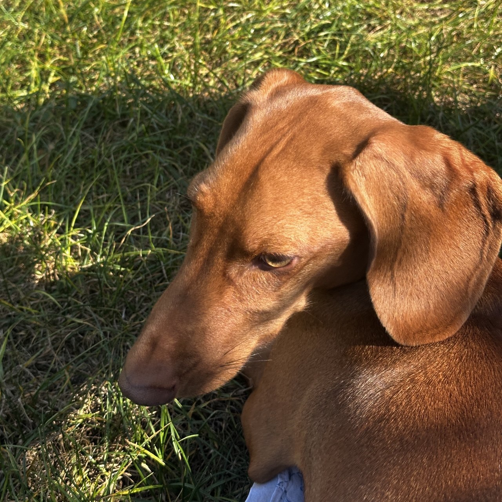

| Анкета | |
|---|---|
| Ім'я: | Нейсон |
| Порода: | Такса |
| Вік: | 5 років |
Нейсон - це маленька, але дуже сміливa такса. Йому 5 років, і він дуже енергійний. Нейсон любить довгі прогулянки та гратися з м'ячиком.
Він завжди зустрічає мене біля дверей і дуже радіє, коли я повертаюся додому. А ще він обожнює спати під ковдрою.